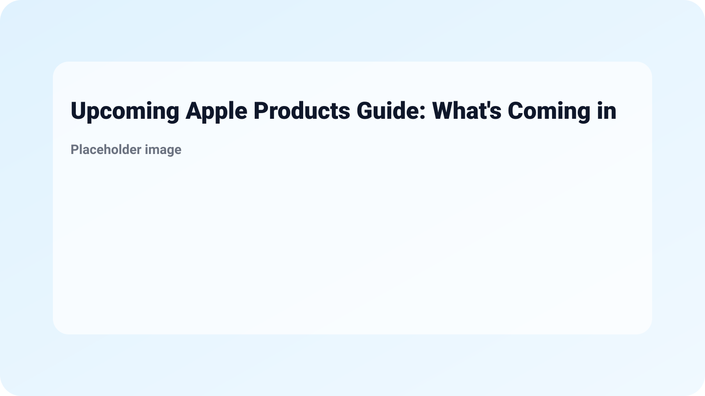

Upcoming Apple Products Guide: What's Coming in 2026 - MacRumors
The tech world buzzes with anticipation for new innovations, and Apple never fails to deliver exciting products. In this Upcoming Apple Products Guide: What's Coming in 2026 - MacRumors, we delve into what Apple might unveil in the near future. As one of the leading tech giants, Apple consistently shapes the market with cutting-edge technology that appeals to younger generations, making it crucial for you to stay updated on the latest developments.
With leaks and rumors swirling, 2026 appears set to be a transformative year for Apple’s product lineup. From new Mac computers to potential advancements in wearable technology, this guide will explore the expected offerings and their significance for consumers. Let’s dive into Apple’s road ahead and discover how it may enhance your daily tech experience.
Apple is known for its innovation and commitment to enhancing user experience. In 2026, we anticipate several exciting product launches, including:

Staying ahead of the latest Apple product announcements is essential for tech enthusiasts and casual users alike. New devices often come with features that enhance productivity, improve connectivity, and cater to changing user needs. Moreover, understanding these trends can help you make informed choices about your technology investments.
The 2026 product launches promise not just upgraded specs, but also shifts in usability through integration across Apple’s ecosystem. The synergy between devices allows for smoother workflows, whether in educational settings or professional environments. By leveraging these upcoming advancements, users can expect a more seamless digital lifestyle.

Apple’s continuous evolution reflects market demands and technological advancements. In 2026, the following changes are expected:
As a consumer, you can take several practical steps to prepare for the upcoming launches:

While specific dates aren’t confirmed, Apple usually holds product announcement events in the spring and September, which can be anticipated for 2026 as well.

Yes, Apple typically provides software updates for several years on older products, ensuring users have access to the latest features and security patches.
Following reputable tech blogs and websites like MacRumors can keep you informed on the latest news and upcoming products.

If your current device is functioning below expectations, consider your immediate needs. However, if you can wait, the upcoming innovations may provide better value.
Anticipated features include improved performance, sustainability-focused designs, enhanced AI capabilities, and more privacy options for users.

With anticipation building for the 2026 lineup, staying informed is your best strategy. Engage with online communities, set your budget, and prepare your wishlist for what could be a groundbreaking year in tech. For more insights into the future, be sure to check out 2026: Missing student's family 'continue to keep hope alive' and explore The Focus Stack Remote Workers Are Using Right Now to understand how technology continues to shape our lives.
More from MingMong:
Source: Link